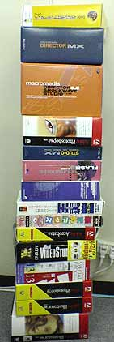

|
■2003/08/29/(Fri)22:07
本日は
|

こんばんは。コノ時期洗濯物を取り込むときはぶんぶん振り回してから取り込む女王様です。
なーんかウチの洗濯物はカナブンに気に入られやすいよーで。
本日はHDDがお亡くなりになったので、急遽新しいHDD交換とあいなりました。で、またインストールしなくてはいけないアプリケーションソフトを積み上げたらこーなりました。あとOSとかドライバーとかofficeとかもインストールしてるので、もちっとあります。
添付メールが届いても解凍ソフトも無い状態。明日も出勤モードとゆーことで。
しっかし、こーしてみるとマクロメディア比率高いな…
特にDirectorでか過ぎ。
他のヒトってどれぐらいソフト積んでるんだろ？
…って悩んでいたら、わらわら同僚が寄ってって、このソフトタワー写真を撮って行きました…オイ…
ところで、ココの日記は書き込み後２４時間ぐらいはワタクシが赤を入れて修正追加をしています。この日記も現在４版ぐらい。
とゆーわけで気がつくと違う文章になってたり追加されてたりしてるのでご注意くださいませ。
|
| |